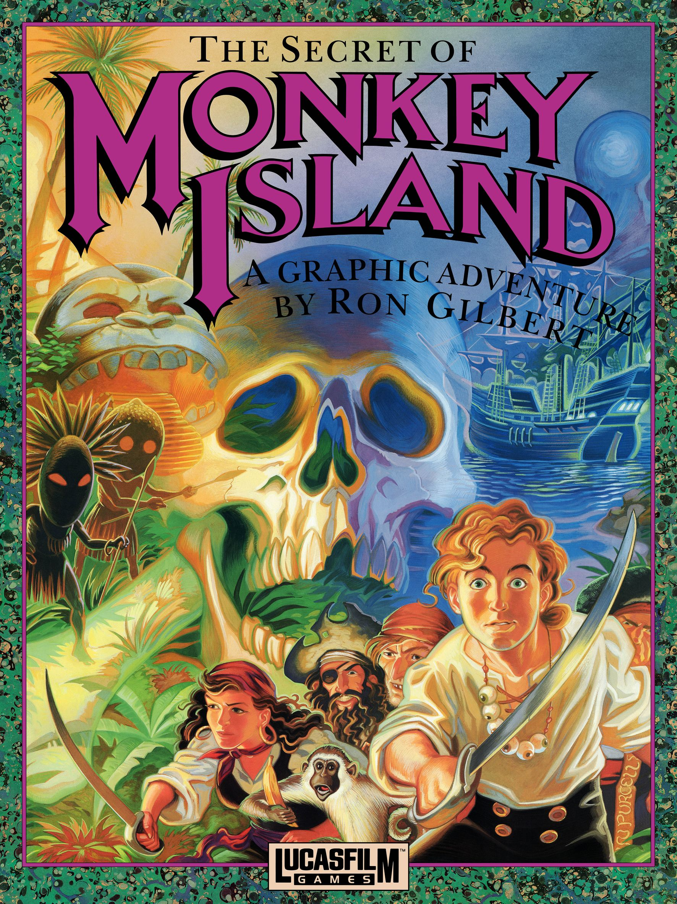
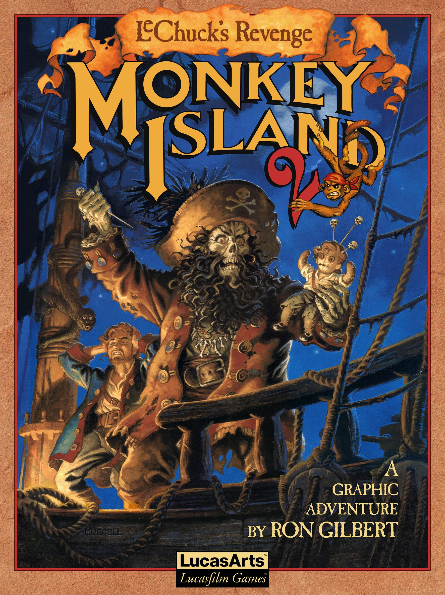

Los Juegos clasicos... y más allá
Está página está dedicada a los juegos, lore y demás productos que fueron creados a partir del juego "El secreto de la isla de los monos" (o en inglés "The Secretof Monkey Island") de 1990. Este juego fue unos de los primeros en utilizar el motor SCUMM de LucasArts y dió vida a toda una saga y a una forma de jugar aventuras. Acá vas a poder encontrar info de los juegos, novedades y la posibilidad de comprar productos relacionados. ¡¡¡ Que la disfrutes pirata!!!!
The Secret of Monkey Island

The Secret of Monkey Island (1990) fue el quinto juego en usar la tecnología SCUMM (tras Maniac Mansion, Zak McKracken, Indiana Jones and the Last Crusade y Loom), un potente (para la época) motor para aventuras gráficas, basado en un lenguaje script propio y desarrollado para la primera aventura: Maniac Mansion. La aventura gráfica debutó primeramente en las plataformas Amiga, Atari ST, MS-DOS y Macintosh, siendo las dos primeras las de superior calidad hasta la llegada de la versión VGA y, finalmente, en CD-ROM con mejoras de sonido. Desde el 15 de julio de 2009 se encuentra disponible una edición especial realizada en alta definición (1920x1080), con un total rediseño gráfico y doblaje. Como curiosidad es posible alternar entre esta versión y la clásica mientras se está jugando, pudiendo observar los cambios realizados.
LucasArts fue la compañía que lanzó este juego al mercado, cuyos creadores fueron Ron Gilbert, Steve Purcell, Tim Schafer y Dave Grossman, dirigidos por el propio Gilbert.
El protagonista de la historia es Guybrush Threepwood, un joven que llega a la isla con la intención de convertirse en pirata, pero para ello deberá pasar por una serie de pruebas, recorriendo toda la isla y, una vez logrado, viajar a la mítica Monkey Island, donde deberá enfrentarse al terrible pirata fantasma LeChuck para rescatar a su nuevo amor Elaine Marley.
¡¡ Mira la intro !!
LucasArts fue la compañía que lanzó este juego al mercado, cuyos creadores fueron Ron Gilbert, Steve Purcell, Tim Schafer y Dave Grossman, dirigidos por el propio Gilbert.
El protagonista de la historia es Guybrush Threepwood, un joven que llega a la isla con la intención de convertirse en pirata, pero para ello deberá pasar por una serie de pruebas, recorriendo toda la isla y, una vez logrado, viajar a la mítica Monkey Island, donde deberá enfrentarse al terrible pirata fantasma LeChuck para rescatar a su nuevo amor Elaine Marley.
Capítulos de The Secret of Monkey Island
- Las tres pruebas
- El viaje
- Bajo Monkey Island
- Guybrush se lía a golpes
Monkey Island 2: LeChuck's Revenge

Es la segunda parte... encontramos a un Guybrush Threepwood rico que se lanza en búsqueda de nuevas aventuras. Sin embargo pronto es despojado de su dinero por Largo LaGrande, un matón que aterroriza la isla Scabb. Deberá hallar el mítico tesoro del Big Whoop, y recuperar de paso el amor de Elaine Marley, volviéndose a enfrentar al pirata, ahora zombi, LeChuck.
Publicado en 1991, fue realizado con el mismo motor por los mismos autores, y distribuido originalmente en disquete, con gráficos VGA para luego ser distribuido por separado y más tarde junto con la primera parte, en CD-ROM. Al igual que su predecesor, se encuentra disponible desde el 7 de julio de 2010 una edición especial realizada en alta definición (1920x1080), con un total rediseño gráfico y con doblaje. El juego tiene un inesperado final, del que se ha dicho que es el más desconcertante de la historia de los videojuegos.
Publicado en 1991, fue realizado con el mismo motor por los mismos autores, y distribuido originalmente en disquete, con gráficos VGA para luego ser distribuido por separado y más tarde junto con la primera parte, en CD-ROM. Al igual que su predecesor, se encuentra disponible desde el 7 de julio de 2010 una edición especial realizada en alta definición (1920x1080), con un total rediseño gráfico y con doblaje. El juego tiene un inesperado final, del que se ha dicho que es el más desconcertante de la historia de los videojuegos.
Capítulos de Monkey Island 2: LeChuck's Revenge
- El Embargo de Largo
- Las cuatro piezas del mapa
- La fortaleza de LeChuck
- Isla Dinky
The Curse of Monkey Island

En 1997 se publicó la tercera entrega, de nuevo utilizando el SCUMM (fue el último título de LucasArts que utilizó este sistema), pero en una versión mucho más avanzada que permitía gráficos de alta resolución, haciéndolo parecer una película de animación.
Al haber abandonado para entonces la empresa los autores de anteriores entregas, el juego tiene otros autores, Jonathan Ackley (que participó en The Dig) y Larry Ahern.
Guybrush Threepwood debía esta vez devolver su forma humana a Elaine, convertida en oro por el hechizo de un anillo maldito. Esta vez, LeChuck se transformará en un pirata demonio, y se cruzará de nuevo con Guybrush y Elaine.
Al haber abandonado para entonces la empresa los autores de anteriores entregas, el juego tiene otros autores, Jonathan Ackley (que participó en The Dig) y Larry Ahern.
Guybrush Threepwood debía esta vez devolver su forma humana a Elaine, convertida en oro por el hechizo de un anillo maldito. Esta vez, LeChuck se transformará en un pirata demonio, y se cruzará de nuevo con Guybrush y Elaine.
Capítulos de The Curse of Monkey Island
- El Fallecimiento del Pirata Zombie Lechuck
- La Maldición Empeora
- Tres velas al viento
- El camarero, los ladrones, su tía y su amado
- El Beso del Mono Araña
- Guybrush machaca otra vez
Escape from Monkey Island

Escape from Monkey Island is a 2000 adventure game developed and published by LucasArts. It is the fourth game in the Monkey Island series, and the sequel to The Curse of Monkey Island (1997). The game was first released for Microsoft Windows in November 2000, and was ported to Mac OS and PlayStation 2 in 2001. It is the first game in the series to use 3D graphics, and the second game to use the GrimE engine, which was upgraded from its first use in Grim Fandango (1998).
The game centers on the pirate Guybrush Threepwood, who returns home with his wife Elaine Marley after their honeymoon, to find her erroneously declared dead, and her office of governor up for election. Guybrush must find a way to restore Elaine to office, while uncovering a plot to turn the Caribbean into a tourist trap, headed by his nemesis LeChuck and an Australian conspirator Ozzie Mandrill.
Escape from Monkey Island received positive reviews and was a moderate commercial success. It was ultimately the last LucasArts adventure game to be released, as the company's later projects Full Throttle: Hell on Wheels and Sam & Max: Freelance Police were canceled in 2003 and 2004, respectively. The game was followed by Tales of Monkey Island, released by Telltale Games in 2009.
The game centers on the pirate Guybrush Threepwood, who returns home with his wife Elaine Marley after their honeymoon, to find her erroneously declared dead, and her office of governor up for election. Guybrush must find a way to restore Elaine to office, while uncovering a plot to turn the Caribbean into a tourist trap, headed by his nemesis LeChuck and an Australian conspirator Ozzie Mandrill.
Escape from Monkey Island received positive reviews and was a moderate commercial success. It was ultimately the last LucasArts adventure game to be released, as the company's later projects Full Throttle: Hell on Wheels and Sam & Max: Freelance Police were canceled in 2003 and 2004, respectively. The game was followed by Tales of Monkey Island, released by Telltale Games in 2009.
Tales of Monkey Island

Tales of Monkey Island is a 2009 graphic adventure video game developed by Telltale Games under license from LucasArts. It is the fifth game in the Monkey Island series, released nearly a decade after the previous installment, Escape from Monkey Island. Developed for Windows and the Wii console, the game was released in five episodic segments, between July and December 2009. In contrast to Telltale's previous episodic adventure games, whose chapters told discrete stories, each chapter of Tales of Monkey Island is part of an ongoing narrative. The game was digitally distributed through WiiWare and Telltale's own website, and later through Steam and Amazon.com.
Players assume the role of pirate Guybrush Threepwood, who—while attempting to destroy his nemesis, the undead pirate LeChuck—accidentally releases a voodoo pox across the Gulf of Melange. With the assistance of his wife, Elaine Marley-Threepwood, Guybrush seeks out a cure. The game was conceived in late 2008, due to renewed interest in adventure game development within LucasArts. It was developed concurrently with LucasArts' special edition of the 1990 game The Secret of Monkey Island; LucasArts oversaw production of Tales of Monkey Island, and ensured that it matched the remake in certain areas, such as art direction.
Tales of Monkey Island received generally positive reviews. Critics praised the game's story, writing, humor, voice acting and characterization; 1UP.com described Guybrush as Telltale's strongest and most expressive character yet. The game's music and graphics were also lauded. Complaints focused primarily on the perceived erratic quality of the game's puzzle design, a weak supporting cast in the early chapters, and the game's control system. Tales of Monkey Island garnered several industry awards, and was Telltale's most commercially successful project until Back to the Future: The Game.
Players assume the role of pirate Guybrush Threepwood, who—while attempting to destroy his nemesis, the undead pirate LeChuck—accidentally releases a voodoo pox across the Gulf of Melange. With the assistance of his wife, Elaine Marley-Threepwood, Guybrush seeks out a cure. The game was conceived in late 2008, due to renewed interest in adventure game development within LucasArts. It was developed concurrently with LucasArts' special edition of the 1990 game The Secret of Monkey Island; LucasArts oversaw production of Tales of Monkey Island, and ensured that it matched the remake in certain areas, such as art direction.
Tales of Monkey Island received generally positive reviews. Critics praised the game's story, writing, humor, voice acting and characterization; 1UP.com described Guybrush as Telltale's strongest and most expressive character yet. The game's music and graphics were also lauded. Complaints focused primarily on the perceived erratic quality of the game's puzzle design, a weak supporting cast in the early chapters, and the game's control system. Tales of Monkey Island garnered several industry awards, and was Telltale's most commercially successful project until Back to the Future: The Game.
Return to Monkey Island

Return to Monkey Island is a 2022 point-and-click adventure game developed by Terrible Toybox and published by Devolver Digital in association with Lucasfilm Games. It is the sixth installment in the Monkey Island series, and was first released for Windows on September 19, 2022.
The story follows series protagonist Guybrush Threepwood as he searches for the real secret of Monkey Island. Return to Monkey Island was the first Monkey Island game by the series' creator, Ron Gilbert, since Monkey Island 2: LeChuck's Revenge (1991), and its story continues from the events of that game. Gilbert worked on the first two Monkey Island games before leaving the development company, LucasArts, in 1992. Further installments were developed by LucasArts and Telltale Games without him. The Walt Disney Company acquired the rights to Monkey Island when it purchased Lucasfilm in 2012; in 2019, Gilbert negotiated to create a new Monkey Island with designer Dave Grossman, who had also worked on the first two games. Return to Monkey Island was announced in April 2022. Dominic Armato reprised his role as the protagonist, Guybrush Threepwood. The game received generally positive reviews.
The story follows series protagonist Guybrush Threepwood as he searches for the real secret of Monkey Island. Return to Monkey Island was the first Monkey Island game by the series' creator, Ron Gilbert, since Monkey Island 2: LeChuck's Revenge (1991), and its story continues from the events of that game. Gilbert worked on the first two Monkey Island games before leaving the development company, LucasArts, in 1992. Further installments were developed by LucasArts and Telltale Games without him. The Walt Disney Company acquired the rights to Monkey Island when it purchased Lucasfilm in 2012; in 2019, Gilbert negotiated to create a new Monkey Island with designer Dave Grossman, who had also worked on the first two games. Return to Monkey Island was announced in April 2022. Dominic Armato reprised his role as the protagonist, Guybrush Threepwood. The game received generally positive reviews.